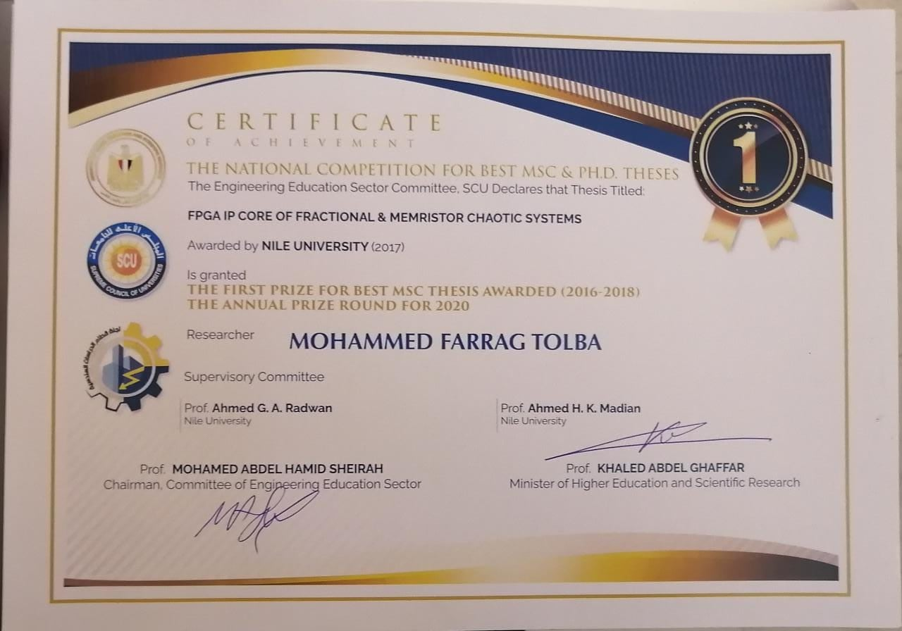
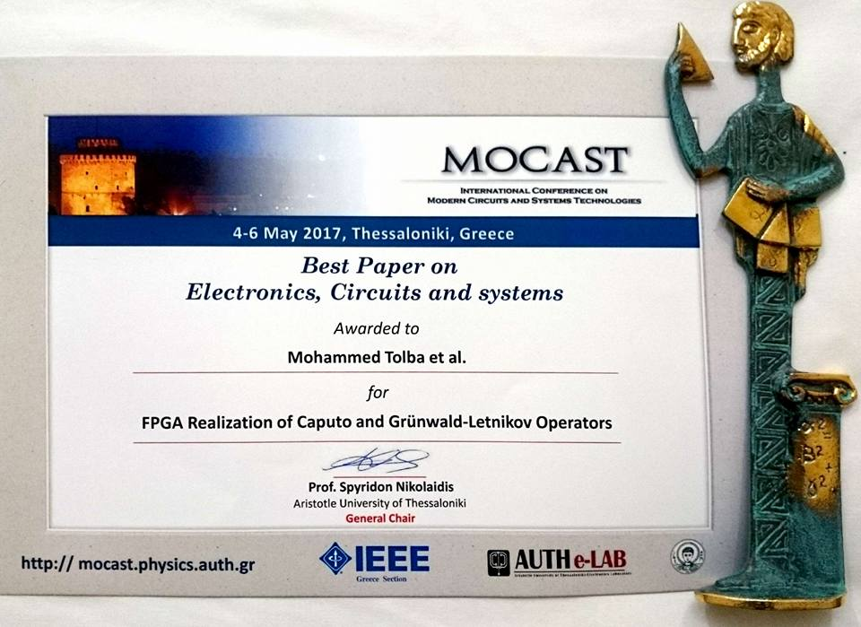

LLM memory systems
KV-cache compression, memory-bandwidth reduction, data-movement minimization, and architecture for long-context inference.
- Capacity-aware compression
- Memory-centric architecture
- Hardware cost analysis
I design memory- and compute-efficient architectures for large-language-model inference, combining hardware–algorithm co-design with RTL, FPGA prototyping, ASIC flows, and system-level evaluation.
About
I am a PhD candidate in Electrical and Computer Engineering at Khalifa University, building hardware-efficient methods for AI and large-language-model inference.
My work connects algorithm design, microarchitecture, RTL implementation, verification, and hardware evaluation. My current research focuses on KV-cache compression and memory-centric architecture for long-context LLMs, together with RD-Softmax, a configurable approximate and fixed-point Softmax architecture.
I bring more than a decade of experience across FPGA/RTL design, CNN acceleration, approximate computing, computation reuse, RISC-V SoC verification, computer arithmetic, and hardware security.
Research
I focus on the bottlenecks that determine real system efficiency: memory movement, numerical representation, compute organization, verification, and hardware-aware approximation.
KV-cache compression, memory-bandwidth reduction, data-movement minimization, and architecture for long-context inference.
Approximate and fixed-point Softmax, dominant-logit retention, masked attention, and accuracy-efficiency trade-offs.
Parameterized RTL, FPGA prototyping, pipelining, fixed-point datapaths, verification, and design-space exploration.
Approximation, computation reuse, processing-element organization, and data-reuse techniques for edge-AI inference.
Two operating modes support different accuracy-efficiency targets: an efficiency-oriented approximation and an accuracy-oriented design that explicitly retains dominant logits.
Selected work
M. F. Tolba et al. · Vol. 5, No. 6, pp. 2678–2692.
M. F. Tolba et al.
M. F. Tolba et al. · Vol. 10, pp. 41551–41563.
M. F. Tolba et al. · Vol. 66, No. 8, pp. 1381–1385.
M. F. Tolba, H. Saleh, M. Al-Qutayri, and B. Mohammad.
Experience
Experience spanning AI accelerators, SoC verification, hardware security, digital arithmetic, teaching, and technical mentorship.
Developing KV-cache compression and efficient transformer operators, including RD-Softmax and FPGA-oriented trade-offs in precision, pipelining, memory bandwidth, latency, and resource use.
Developed CNN/DNN accelerator architectures, led formal verification and the end-to-end EDA flow for a complex RISC-V-based SoC, and co-invented an issued U.S. patent for edge-AI acceleration.
Built FPGA systems for speech encryption, fractional-order operators, memristor and chaotic-system models, GPU architectures, and digital arithmetic.
Khalifa University · GPA 3.79/4.00
Expected December 2027
Nile University · GPA 3.7/4.0
Best Master's Thesis Award
Fayoum University · Honours
Delivered tutorials and graded coursework in digital IC design, ASIC/FPGA design, electric circuits, and calculus.
Mentored a nationally funded graduation project that produced scholarly outputs and won two departmental competition awards.
Verilog, VHDL, parameterized RTL, FPGA prototyping, fixed-point arithmetic, pipelining, and memory-system design.
Formal verification, ModelSim, Xilinx ISE, Synopsys Design Compiler, Cadence SoC Encounter, Cadence Virtuoso, MATLAB/Simulink, and C/C++.
Recognition
National and international recognition for research in FPGA systems, circuits, and digital design.

Engineering Education Sector Committee, Supreme Council of Universities, Egypt.

International Conference on Modern Circuits and Systems Technologies, Thessaloniki, Greece.
IEEE Transactions on Circuits and Systems II · AEU – International Journal of Electronics and Communications · IEEE International Conference on Microelectronics
Contact
I welcome conversations about visiting research, collaborative projects, and research-engineering roles in AI hardware, LLM systems, FPGA/ASIC design, RTL, and computer architecture.